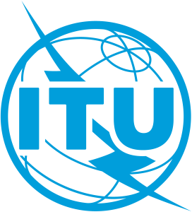
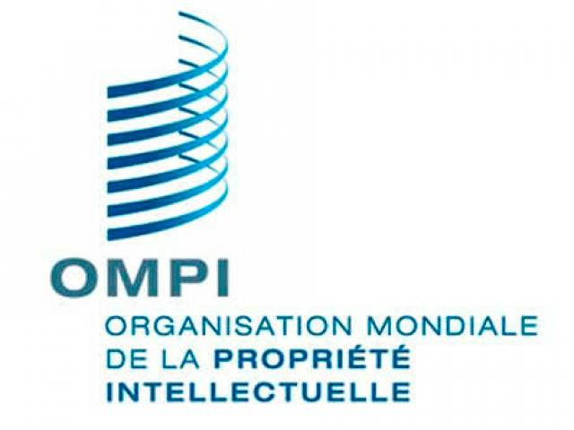

Para comenzar, citaremos algunas de las organizaciones internacionales que promueven el acceso y el intercambio de información digital, en forma regulada, responsable y global. Éstas son la Organización de las Naciones Unidas para la Educación, la Ciencia y la Cultura (UNESCO), la Unión Internacional de Telecomunicaciones (UIT) y la Organización Mundial de la Propiedad Intelectual (OMPI).
“La UNESCO contribuye a la paz y la seguridad promoviendo la cooperación internacional en educación, ciencias, cultura y comunicación”. (www.unesco.org) En el contexto digital, ha desarrollado una serie de programas para promover el acceso a la información y al conocimiento, como el “Programa Información para Todos”, en el que se destaca evidentemente el “acceso a la información”. De este programa se puede rescatar un fuerte trabajo con el desarrollo de la AlfIn, tal y como el mismo lo indica:
“Alfabetización informacional empodera a las personas en todos los ámbitos de la vida para buscar, evaluar, usar y crear información”. ()
La UIT (Unión Internacional de Telecomunicaciones) es la agencia especializada de las Naciones Unidas para las tecnologías de la información y las comunicaciones (TIC). Ha desarrollado normas y políticas para promover el acceso universal a las TIC y fomentar el desarrollo de redes de banda ancha y tecnologías digitales. (Itu.in)
La OMPI, por otra parte, es la Organización Mundial sobre la Propiedad Intelectual. Sus esfuerzos se encaminan a la creación de políticas, servicios, información y cooperación en materia de propiedad intelectual. Trabaja para garantizar que se protejan la innovación y la creatividad y que se respeten los derechos de propiedad intelectual a nivel global. Las normas técnicas de la OMPI en materia de propiedad intelectual, son dignas de destacar:
Las normas técnicas de la OMPI proporcionan un marco para trabajar con la información contenida en los documentos de propiedad industrial.
- Se refieren a patentes, marcas, diseños industriales, indicaciones geográficas y derecho de autor.
- Se aplican en todas las etapas de la tramitación (presentación, examen, publicación y concesión).
- Sirven para que las aplicaciones digitales lean automáticamente los datos
La aplicación de las normas técnicas de la OMPI permite que las oficinas de propiedad intelectual de todo el mundo trabajen de manera más eficiente, armoniosa y dentro de los plazos establecidos.
Asimismo, las normas técnicas de la OMPI simplifican enormemente la cooperación internacional entre las oficinas y el uso público de información sobre propiedad intelectual. ()
Por otra parte, los acuerdos internacionales también desempeñan un papel crucial en la promoción del acceso y el intercambio de información digital a través de las fronteras. El Acuerdo de la Organización Mundial del Comercio (OMC) sobre los Aspectos de los Derechos de Propiedad Intelectual relacionados con el Comercio (ADPIC) es el acuerdo multilateral más completo sobre propiedad intelectual. Establece principios básicos para la protección y el cumplimiento de los derechos de propiedad intelectual y tiene como objetivo promover su uso de una manera que sea justa y beneficiosa para la sociedad [4].
El Reglamento General de Protección de Datos (GDPR) de la Unión Europea es otro ejemplo de acuerdo internacional que tiene como objetivo proteger la privacidad y seguridad de la información digital. Establece reglas estrictas para la recopilación, almacenamiento y uso de datos personales y se ha convertido en un modelo para otros países y organizaciones.
Estas normativas y acuerdos son, como se podrá notar, más partidarios de la protección de los datos y de la propiedad intelectual, que del libre acceso a la información en sí. Es decir que, visto desde un plano legal, son documentos que pretenden dar un marco legal al intercambio de información digital, y sobre todo, a su acceso, resguardando los intereses de quienes producen bienes, servicios y obras en general.
Referencias
- UNESCO. (s.f.). UNESCO en breve. https://www.unesco.org/es/brief
- UNESCO. (s.f.). Programa de Información para todos. https://www.unesco.org/es/ifap
- International Telecommunication Union. (s.f.). About International Telecommunication Union (ITU). https://www.itu.int/es/about/Pages/default.aspx
- WIPO - World Intellectual Property Organization. (s.f.). Acerca de las normas técnicas de la OMPI. https://www.wipo.int/standards/es/
- WTO | Intellectual property. (s.f.). ADPIC: aspectos de los derechos de propiedad intelectual relacionados con el comercio. https://www.wto.org/spanish/tratop_s/trips_s/trips_s.htm
- General Data Protection Regulation (GDPR). (2016). Reglamento General de Protección de DatosRGPD. https://dsgvo-gesetz.de/